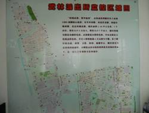
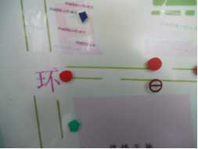
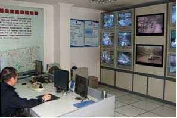
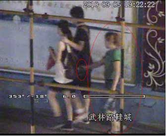
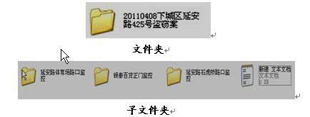

重要提示：
各派出所应对本辖区内各种监控的数量、位置、性能进行全面排摸，切实掌握底数；对不能直接操控的监控点，应注明所属单位、联系人及联系方式。在处置过程中应坚持主动巡查为主、事后证据固定为辅的原则。
一、 总则
(一)本操作程序旨在明确监控与警情处置的操作标准和流程，规范监控视听资料的调取和保存，提高监控应用水平，使监控在社会治安防控、接处警现场处置、固定证据、保护民警合法权益等方面发挥积极作用。
(二)本章所指的监控，既包括街面治安监控、社区监控、交警电子监控、智能卡口监控、公安机关内部监控等公安机关可直接操控的监控，也包括银行、学校、商场、小区等其他单位或个人安装的监控。
(三)在日常监控与警情处置过程中，应坚持主动巡查为主、事后证据固定为辅的原则。要加强对监控操作人员的培训，提高利用监控主动发现各类现行违法犯罪的能力。
(四)派出所应对本辖区内各种监控的数量、位置、性能进行全面排摸，切实掌握底数，对各监控点编排代码，制作“监控分布表”（见下表），其中监控安装位置应明确到楼层、房间等具体部位。对于派出所不能直接操控的监控点，应注明所属单位、联系人及联系方式。
监控分布表
|
编 码 |
所属单位 |
具 体位 置 |
覆 盖
区 域 |
性能 （球机、枪机） |
保 存
周 期 |
派出所是否可 操 控 |
联系人 |
监控室固定电话或值守人员 手机 |
|
|
|
|
|
|
|
|
|
|
(五)派出所应将监控分布情况在警用地理平台上予以标注。视情制作“监控分布图”，便于实战应用。
 
监控分布图
(六)派出所应定期巡查，全面、准确掌握本辖区的监控点变化情况，及时收集新增、停用的监控点，并在“监控分布表（图）”及警用地理平台上进行增删。
发现监控损坏、模糊、被遮挡等情况时，及时修复或通知监控所属单位进行维护。
(七)派出所设立监控室，实行24小时值班制，操作人员由民警或协辅警担任。

监控室
(八)监控室操作人员履行以下工作职责：
1、熟知辖区内的监控分布位置，发生警情时迅速确定相对应的监控点。
2、巡查辖区治安情况，重点查看案件高发地、治安复杂地、人员聚集地以及政府机关、学校等敏感、重点区域，发现违法犯罪活动或异常情况时，立即通报值班人员。
3、每日定时查看监控运行情况，发现监控出现无图像或图像质量有问题时，在《监控运行情况检查登记表》（附件1）中予以登记并报告所领导。
二、 监控与警情处置操作
监控与警情处置是指警情发生以后，监控操作人员使用监控系统全程跟踪警情发生、发展、结束及民警现场处置的过程。
(一)值班人员接到报警后，应立即通知监控操作人员启动监控与警情处置程序。
监控操作人员在巡查过程中发现警情的，启动监控与警情处置程序，并立即通知值班人员处警。
(二)警情处置过程中，监控操作人员与现场处置民警应当加强互动：
1、监控操作人员应将现场前期情况、嫌疑人的体貌特征、逃跑路线等及时通报给现场处置民警。
2、现场处置民警发现报警地点有误时，应立即通知监控操作人员，便于监控操作人员及时调整监控区域。
(三)现场处警民警应加强证据意识，尽量将违法犯罪人员引导至监控覆盖区域。
(四)监控操作人员操作监控时应做到：
1、同一时间段发生多起警情，条件允许时应同时操控多个监控；不能同时操控时，应优先跟进重大、敏感案（事）件警情。

嫌疑人正在实施扒窃
2、对处警过程全程录制，在警情处置完毕前不得将监控探头调离现场。
3、根据不同警情的取证要点，合理利用远角、近角以及整体画面、局部特写等技术，使全景画面与局部画面合理结合，以更好、更准确地反映现场秩序、嫌疑人行为及物证特征等要素，为后续取证工作打好基础。
4、监控操作人员发现现场情况复杂，处置警力不足时，应立即报告值班所领导。
5、监控操作人员实施监控与警情处置工作后，应详细填写《监控与警情处置登记表》（附件2）。
(九)对于涉及以下内容的监控视听资料，应妥善保存：
1、违法犯罪行为发生的过程；
2、嫌疑人体貌特征；
3、抓获嫌疑人的过程；
4、其他可能作为案件证据使用的场景。
(十)警情发生区域没有派出所可控监控时，应及时核查有无其他监控资源，并通知监控点联系人利用监控跟进警情，要求其保存监控记录至少7日。
对于可能引起群众、媒体关注的警情，应告知监控联系人妥善保管监控视听资料，未经公安机关许可，不得提供（包括拷贝、翻拍、查看）给新闻媒体等单位或个人。
三、 监控视听资料调取与保存
(一)调取
1、办案民警可以通过《监控与警情处置登记表》来查询案发地附近的监控。对于需要作为案件证据使用的，应当在案发后7日内调取监控视听资料。
2、行政案件的监控视听资料，一般由办案民警负责向监控所有人调取。若监控所有人拒绝提供，办案单位可经所属公安分局、县（市）公安局负责人批准，开具《调取监控视听资料通知书》（附件3）调取（若与即将出台的第三版《公安机关办理行政案件程序规定》规定不一致，则从其规定）。
调取刑事案件的监控视听资料，应开具《调取证据通知书》。
3、调取视听资料时，应对原始储存介质当场封存调取，并在封存前复制刻录在光盘中。原始储存介质无法封存调取的，应要求证据持有人妥善保存该原始储存介质，以便日后核对。
制作过程中截取视听资料的时间长度，应根据案件具体情况，适当大于所需调取的时间段。
对特殊文件格式的视听资料证据，应在复制刻录过程中附该格式的专用播放器。
4、将调取的光盘装在存放袋内附卷，并注明案件名称、视听资料主要内容、调取人、调取时间等信息。如果是监控所有人主动提供的，应由其确认无误后签名；如监控属单位所有，应加盖单位印章。
|
光盘存放袋
案件名称
监控点位置
视听资料内容简介
刻录日期
原始储存介质保存期限
原始储存介质保存处
视听资料提供人或单位（盖章）
调取单位
调取人
调取日期
|
光盘存放袋式样
5、办案民警在调取监控视听资料后，应在《监控与警情处置登记表》“是否调取或保存”一栏中注明。派出所领导应定期对《监控与警情处置登记表》登记的内容进行查看，如发现应调取而未调取的，指令及时调取。
(二)保存
1、应将刻录的光盘或原始储存介质置于远离强磁场、高温、高压、静电等环境，确保储存介质质量良好、使用正常。
2、办案单位视情配备专用电脑，用于备份视听资料并加密。备份时，同一起案（事）件的视听资料应当保存在同一个文件夹下，文件夹命名应当与打防控中的案件名称相一致，以“时间+地点+案由”的形式命名。当视听资料来源于数个不同渠道时，每一个数据来源再单独建立一个子文件夹，子文件夹以数据来源命名。

3、文件夹内除保存的视听资料片段以外，还需建立一个文本文档。文本文档应当说明以下情况：
（1）制作人、制作方法、制作时间；
（2）证明内容；
（3）原始储存介质存放处；
（4）其他需要注明的情况。
4、一般案件的视听资料保存期限为两年，涉及国家安全案件、涉外案件、重特大刑事案件、未破案件等视听资料，应长期保存。